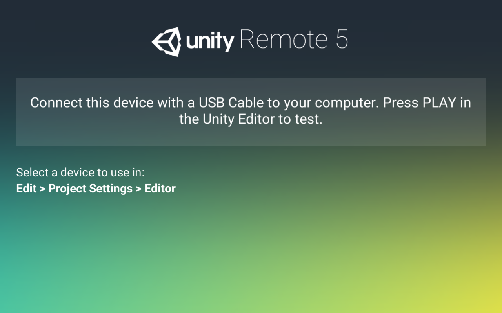
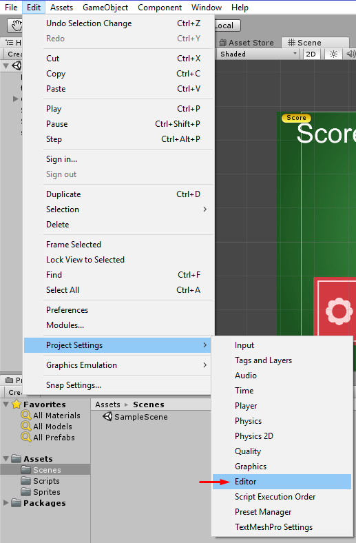
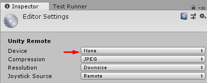
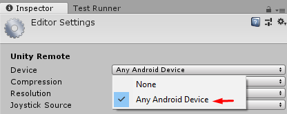

Unity Remote
С помощью Unity Remote 5, вы можете использовать устройство для просмотра и проверки своей игры вживую, прямо из редакторе Unity 5.4 или более поздней версии.
Официальное описание: https://docs.unity3d.com/Manual/UnityRemote5.html
Android версия: https://play.google.com/store/apps/details?id=com.unity3d.genericremote&hl=ru
iOS версия: https://itunes.apple.com/us/app/unity-remote-5/id871767552
Интсрукция:
1) Установите на устройство Unity Remote 5
2) Запустите приложение Unity Remote 5 на устройстве

3) Подключите устройство к компьютеру через usb порт
4) Откройте редактор Unity3D на компьютере (откройте проект)
5) В редакторе перейдите в меню и откройте редактор Edit -> Project Settings -> Editor

6) По умолчанию в списке девайсов стоит None

7) Выберите один из вариантов или конкретный девайс если он есть в списке

8) Запустите игру в редакторе нажав на Play
На устройстве должна отобразиться запущенная игра.
Created with the Personal Edition of HelpNDoc: Free iPhone documentation generator